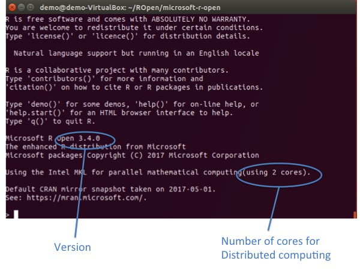

Eagle for Linux
A How To guide for installing R Open and Eagle [last revised Sept 2018]
Before You Start
You will need administrator privileges. That is, you will need to be able to run the sudo (superuser do) command. This gives the installation script access to write-protected parts of the system.
Overview
Here, we present the process for installing Microsoft R Open (the same as R except it comes with multi-threaded math libraries) and Eagle on different linux systems. If your linux system is not referenced below, select the instructions for its nearest neighbour. For example, we do not provide instructions for Red Hat Enterprise Linux but we do for CentOS, its close relative.Step 1: Getting Your System Ready
Select your (nearest) distribution for instructions on how to prepare your system for the installation of R Open and Eagle.
Before R Open and Eagle can be installed, a C++ and Fortran compiler are needed. Below are instructions for their installation, given that they are not already available on your system.
Installation of a C++ compiler
To install a C++ compiler, usesudo yum install gcc-c++
Installation of a Fortran compiler
To install a Fortran compiler, use
sudo yum install gcc-gfortran
Before R Open and Eagle can be installed, a C++ and Fortran compiler are needed. Below are instructions for their installation, given that they are not already available on your system.
Installation of a C++ compiler
To install a C++ compiler, usesudo yum install gcc-c++
Installation of a Fortran compiler
To install a Fortran compiler, use
sudo yum install gcc-gfortran
Before R Open and Eagle can be installed, the libpng12 library is needed along with a C++ and Fortran compiler. Below are instructions for their installation, given that they are not already available on your system.
Installation of libpng12
libpng is a reference library containing functions to read, create, and manipulate PNG image files. You need libpng12 on your system. A different version will not suffice.
Step 1: Check if your system has libpng12
Run the following Unix command. If the library is present, you will see files that begin with libpng12 being found and there is no need to do steps 2 to 4 below.
sudo find / -name 'libpng12*' -print
Step 2: Add the repository that contains the libpng12 library.
Add the following lines to the end of the file /etc/apt/sources.list. To do this, you will need administrator (sudo) privileges.
deb http://ftp.debian.org/debian/ jessie main non-free
deb-src http://ftp.debian.org/debian/ jessie main non-free
Step 3: Update the package listings in the repositories
Run the following command to update the package listings
sudo apt-get update
Step 4: Install libpng12
Run the following command to install libpng12
sudo apt-get install libpng12-0
Installation of a C++ compiler
To install a compiler for C++, run the following command
sudo apt-get install build-essential
Installation of a Fortran compiler
To install a compiler for Fortran, run the following command
sudo apt-get install gfortran
Before R Open and Eagle can be installed, the file /etc/SuSE-brand needs to be created , and a C++ and fortran compiler installed (if not already available).
Create SuSE-brand file
R Open was designed to run on SUSE Enterprise. As such, it looks for a file called SuSE-brand which does not exist in openSUSE. The work around though is easy. Just type the following (making sure you type SuSE and not SUSE)
sudo cp /etc/SUSE-brand /etc/SuSE-brand
Installation of a compiler for C++
To install a C++ compiler, usesudo zypper install gcc-c++
Installation of a Fortran compiler
To install a Fortran compiler, usesudo zypper install gcc-fortran
Before R Open and Eagle can be installed, the libpng12 library is needed along with a C++ and fortran compiler. Below are instructions for their installation.
Installation of libpng12
libpng is a reference library containing functions to read, create, and manipulate PNG image files. You need libpng12 on your system. A different version will not suffice.
Step 1: Check if your system has libpng12
Run the following Unix command. If the library is present, you will see files that begin with libpng12 being found and there is no need to do steps 2 to 4 below.
sudo find / -name 'libpng12*' -print
Step 2: Add the repository that contains the libpng12 library.
Add the following line to the end of the file /etc/apt/sources.list. To do this, you will need administrator (sudo) privileges.
deb http://mirrors.kernel.org/ubuntu xenial main universe
Step 3: Update the package listings in the repositories
Run the following command to update the package listings
sudo apt-get update
Step 4: Install libpng12
Run the following command to install libpng12
sudo apt-get install libpng12-0
Installation of a C++ compiler
To install a compiler for C++, run the following command
sudo apt-get install build-essential
Installation of a Fortran compiler
To install a compiler for Fortran, run the following command
sudo apt-get install gfortran
Step 2: Download R Open
Installing a multi-threaded version of R is now much easier with Microsoft R Open. R Open behaves exactly the same as R, except, by default, it comes with multi-threaded math libraries.
Go to the Microsoft R Open web site and download the version of R Open that corresponds to your system. When you are asked whether you want to Open with or Save File, you should Save File.
If your system is not listed, pick the distribution closest to your operating system. For example, select SUSE for openSUSE, Red Hat Enterprise Linux for Fedora, and Ubuntu for Debian. Don't worry if your version number doesn't match what is listed on Microsoft's download page. Step 1 above takes care of this.
Step 3: Uncompress microsoft-r-open-3.5.1.tar.gz
First, create (mkdir) a separate directory in which to uncompress the R Open files.
mkdir ~/RHome Second, move (mv) microsoft-r-open-3.5.1.tar.gz from the Downloads directory into the newly created ROpen directory.
mv ~/Downloads/microsoft-r-open-3.5.1.tar.gz ~/ROpen/.
Third, change directory (cd) into ~/ROpen and extract the files via the tar xvfz command. This will create a new directory in ~/ROpen called microsoft-r-open
cd ~/ROpen tar xvfz microsoft-r-open-3.5.1.tar.gz
Step 4: Run ./install.sh as sudo to install R Open
First, change directory into the microsoft-r-open directory
cd ~/ROpen/microsoft-r-open
Second, run the installation script install.sh as sudo. Remember to add the -n parameter at the end of the command. You will be prompted to enter your administrator password for sudo, and then just follow the instructions from the installation script.
sudo ./install.sh -n
Step 5: Run R Open
To run R Open, type the following
R
The following with then appear
Step 6: Installation of the Eagle package
To install the Eagle package, from the R command window, use the install.packages( ) command
install.packages("Eagle")
This takes a bit of time since it is not only Eagle but all its dependencies that need installing.
Step 7: Start using Eagle
To start using Eagle, from the R command window, use
library("Eagle")
This will load the Eagle package into your R session, ready for use. Go to Quick Start Guide for instructions on how to use Eagle.